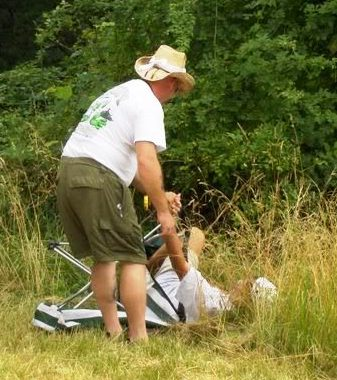

International R/C Warship Combat Club, Inc.
Keeping Ponds Safe since 1978
Comments from the battlers at Nats 2008
Best & Worst
Don's sink (on dry land)
Don's moments at NATS
My best was finding Tommy's superstructure in all that muck.
My worst was Tommy sinking my South Carolina in one on ones.
Steve Andrews
Best-Pounding the poop out of my wife.-Seeing all my friends again.
Worst-Sinking due to pump failure.
Matthew Andrews
Best: My one on one with Aiden
Worst: Wining my own award
Bill G.
Bill, I missed the Fisher Fallover, G. :
Since Laura and I were only there for clean up and the Awards Dinner my personal best was Doctor Diving Don recovering Tommy's Hindenburgh topsides and Lliam asking his father "what's a Ball Breaker?" The worst was that Teapot thing at the end and what's left of the Von Fleugel. Thanks to all who made it to the event and to all who did not I hope to see you all on the water very soon.
Nate:
Best - Well the whole week was a great time for me. Ships worked and well (WeeVee earned her sink). Concept of the Akitsu Maru worked. And I had a ball trying to survive the Hornet’s nest Wednesday. ( Thanks again son for recovering the ship for me.)
Worst – Well the only bad thing was smashing my finger trying to clear rainwater out of my fill station. Healing well just won’t bend all the way yet.
Brandon:
Best: shredding my dad,
Worst: frying my boards.
Ginger Andrews:
My best was, of course, CAMPAIGN. That was a hoot. Can we do that every day? and winning the Axis High Spirt award.
My worst was HHMMM that is hard HHMMM the dogs while running wasn't fun but that wasn't you guys. HHMMM AAAHHH. Chris smacking MY Props (they are mine while I am captaining, right Plato!) and dunking MY bow in the water during Campaign.
All in all, a great week.
platon avramides:
BEST, watching Steve sing
Worst, Listening to Steve sing
Don E.
Best - Meeting all of you fine people and learning a ton of information about ship construction and what I need for the hobby. Thanks to everyone for their help and valuable information.
Worst - Not being able to battle as much as I would have liked to. But wait until next year!
Chris B:
My Best moments
1. Hanging out with all of you guys.
2. Being chased around the lake by Mr. Marty and Rob.
3. Ripping into the Boston in our Second One on One
4. Watching Plato, Carl, Rob, and Mr. Steve go toe to toe during one on ones!!!!
5. Not sinking during fleet actions or convoy
My Worst Moments
1. Sinking during speed trials.
2.Getting Sunburned for the first time on my feet ( whats up with that) haha
3.Realizing that Nats had to end :(
P.S. Im working on the rookie experiance now i hope to have it posted by Wensday at the latest.
Danny's
best-making a convoy run without getting 1 hole
worst-experiencing the first fire on the MD in 20 yrs
Robert's
best--not sinking all week--( ha ha my dad sunk twice)
worst--no Ring of Death
Fred Elwell
My Best beating the other Rookie 1 on 1 Good Fight Chris
My worst humm where do I begin LOL
Jim B.
Best- Becoming the hunter instead of the hunted.
Worst- missing one on ones on Wednesday.
Ken and the boys
We missed you, wish you could have been there! I just posted some pics on the Yahoo site, check them out when you get a chance. Axis one again this year ("three-peat") in a really well fought Nats (much credit to the tough Allied captains!). Lots of really good one on ones on Wednesday and Friday:
- two Yams (Carl & Plato) vs. NC and SoDak (Steve & Rob) - Yams won
- Ostfriesland (Tom) vs. SC (Don) - Ostfriesland sank the SC
- VDT (Matt) vs. Moltke (Aidan) - Aidan squeeked out a win in a hard hitting battle
- Musashi (Carl) vs. Yamato (Plato) - Carl came out on top in this battle of the giants
- Father & Son: Thuringen (Ken) and NC (Marty) vs. Kieran (Helgoland), Aidan (Moltke), and Steve (NC) - Ken and Marty won a decisive victory over the youngsters sinking the NC and Helgoland in the process
There may have been a couple more one on ones that I can't remember right now...
Best moments:
- Getting to see all of my best friends once again!
- Getting to meet new friends! Welcome aboard Ginger, Chris, Fred, & Rob!
- Watching Aidan catch all those bass
- Seeing how the Helgolands handled on the water (Sunday at Nats was the first time we had them on the water!).
- Sailing the Thuringen instead of the Derfflinger!
- Steve's NC barely making it's five minutes during the third (I think) fleet battle (much to Matt's chagrin...). Way cool!
- Seeing how much fun Ginger had sailing the Shinano during Campaign battle!
- The two old guys (Marty and I) beating the young ones (Steve, Kieran, and Aidan) during the Father & Son battle on Friday (and sinking Steve's NC and Kieran's Helgoland in the process!). You know what they say; "Age and treachery..."
- The look on Matt's face when he found out he had won the "Most Spectacular Sink" trophy!
Worst moments:
- Friday afternoon when Marty yelled out "Nats 2008 is officially over!" :(
- Oh yeah, staying up all night Saturday night and Sunday night getting the Thuringen and Helgoland ready for Monday morning fleet battle (total of 7 hours of sleep in 4 days, ughhhh.....). I'll have all the ships ready before Nats next year, I promise!
